horsetrader.Rmdmuddier
The package is inspired by the field of fluvial geomorphology. Correcting for the inhertied ages of radiocarbon-dated charcoal in samples of debris-flow deposits in headwater streams concerns a particular application of deriving a PMF from two parent PMFs through convolution. The functions in are an attempt to abstract the particulars of the application into a more general set of tools for converting emprical observational data into CDFs, PMFs, and for deriving PMFs from multiple parent PMFs.
Let’s play a game called Horse Trading, where you are the prospective buyer of a racehorse. It is your desire to buy the horse that will win the most amount of races on average.
Each horse has two attributes, strength and heart. Strength represents the stamina and health of the animal, and heart represent their fighting spirit. Strength does not vary much from race to race, and will always be a sequence of two consecutive numbers. Heart is more variable, and draws from a normal distribution with mean zero. The numeric value of the heart attribute determines the standard deviation of the distribution. To determine the winner of a race, choose either number from the strength couplet with equal likelihood, and take a random draw from the heart distribution. Add the two numbers together and this is the total effort applied by the horse. The horse to exert the most effort wins the race!
Now you must choose between two prospective racehorses for your stable. Which is the finer steed? The first is Arnold, a burly reliable horse. Arnold has a strength of 10-11. When it comes to fiery spirit, Arnold exhibits a lackluster work ethic, with a heart of mean 0 and sd 1.
set.seed(777)
n <- 10000 # number of bootstraps
y <- 1:15
arnold_str <- vector(length=15, mode='numeric')
# where y values are 10:11, change str prob to 50%
arnold_str[10:11] <- .5
arn_hrt_obs <- rnorm(1000,0,1)
plot(y, arnold_str, main='Arnold Strength', type='l')
plot(density(arn_hrt_obs), main='Arnold Heart')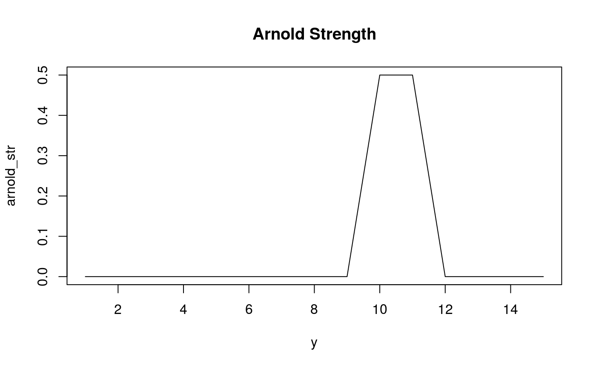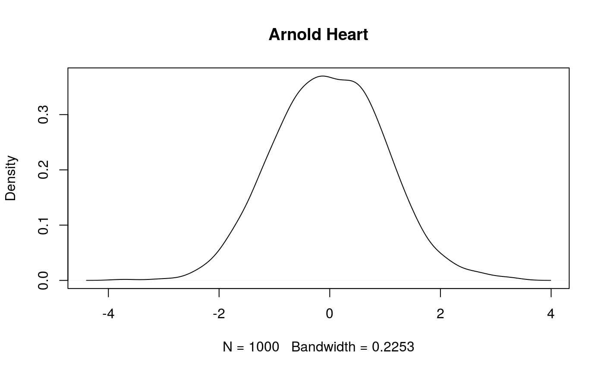
The second horse is named Rudy. Rudy is small and slow, and other racehorses laugh at him and tease him. His strength has a range of 1-2. But Rudy has the heart of a true warrior, with a sd of 12.
set.seed(777)
n <- 10000 # number of bootstraps
y <- 1:10
rudy_str <- vector(length=10, mode='numeric')
# where y values are 1-2, change str prob to 50%
rudy_str[1:2] <- .5
rud_hrt_obs <- rnorm(n,0,12)
plot(y,rudy_str, main='Rudy Strength', type='l')
plot(density(rud_hrt_obs), main='Rudy Heart')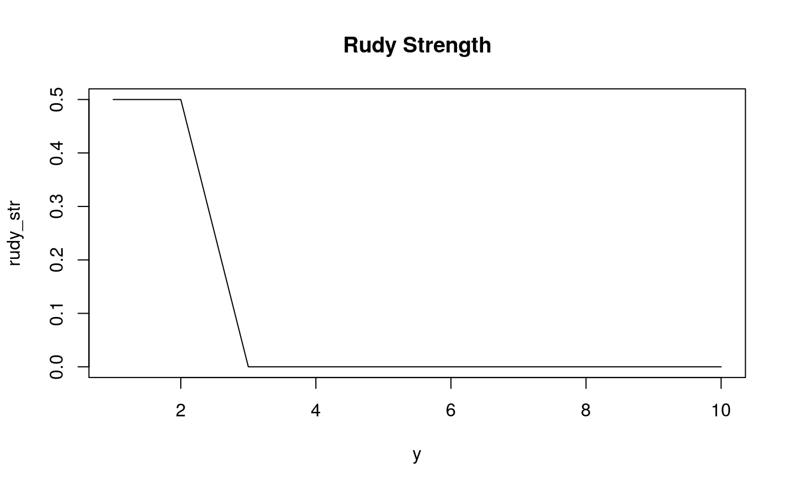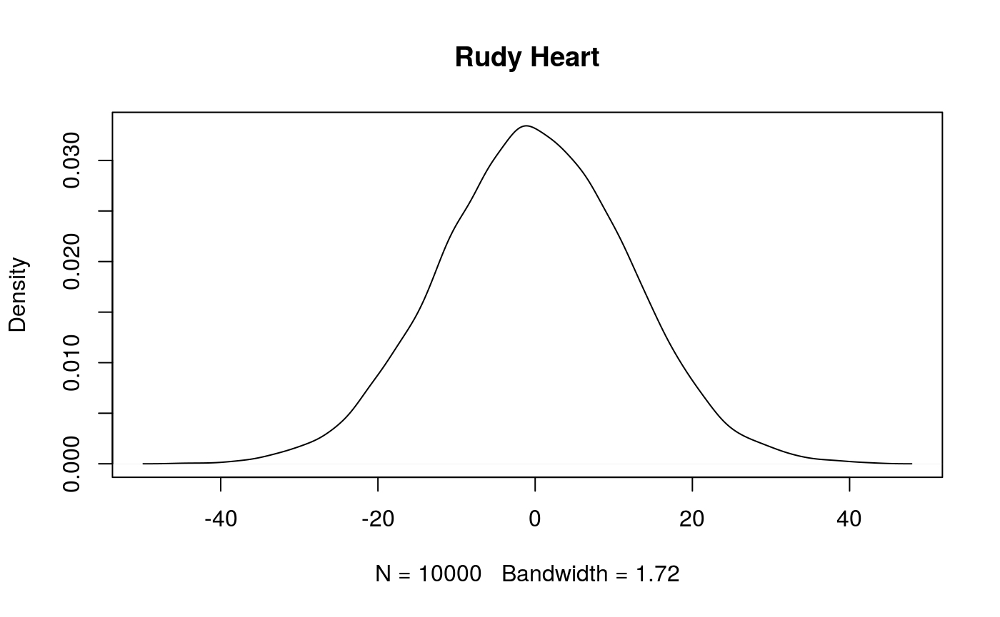
One method to determine which horse is more likely to win a race is bootstrapping, in this case using horseshoes.
n <- 10000 # number of bootstraps
ar_str <- sample(10:11,n,rep=T) # arnold strength values
ar_hrt <- rnorm(n,0,1) # arnold heart values
ar_res <- ar_str + ar_hrt # arnold resulting race effort
rd_str <- sample(1:2,n,rep=T) # rudy strength values
rd_hrt <- rnorm(n,0,12) # rudy heart values
rd_res <- rd_str + rd_hrt # rudy resulting race effort
ar_wins <- ar_res - rd_res # arnold effort minus rudy effort
for (i in seq_along(ar_wins)) {
if (ar_wins[i] > 0) {
ar_wins[i] <- 1 # if positive arnold wins
} else {
ar_wins[i] <- 0 # if negative rudy wins
}
}
ar_wins <- sum(ar_wins) / n * 100 # convert to %
print(paste0('Arnold wins ',ar_wins,'% of the time.'))
#> [1] "Arnold wins 77.3% of the time."
print(paste0('Rudy wins ',100-ar_wins,'% of the time.'))
#> [1] "Rudy wins 22.7% of the time."As you can see, the strength of Arnold prevails over the fiery heart of Rudy, and the wise horse trader would purchase Arnold. The clever math student reading has already come to the conclusion that the higher strength will always win, because the mean for all heart attributes is zero. The long term average will center on zero regardless of how high the horse’s heart sd value. But this is just a game! Now let’s see how the muddier package can help you to do the same thing, but in a more complicated way.
muddier
The muddier package derives a pmf from two other pmfs using convolution. Since R is vectorized, we represent a pmf as a discretized PMF. To calculate the PMF for a given variable, muddier first calculates the CDF of the variable, then derives the PMF from the CDF using the function fit_pmf().
The function fit_pmf() takes two arguments. The first agrument vals is the sorted numeric vector of variable values. The values need to be sorted in ascending order for the function to derive the CDF properly, and it will not warn you if the output is nonsense, so sort your numeric vectors.
The second argument index is the range of values along which to derive the PMF. The index will make more sense seen in action. Let’s convert Arnold’s and Rudy’s attributes into PMFs using fit_pmf():
library(muddier)
n <- 10000 # number of bootstraps
y <- -59:60 # index range
arn_str <- fit_pmf(sort(10:11),y) # arnold strength pmf
arn_hrt <- fit_pmf(sort(arn_hrt_obs),y) # arnold heart pmf
rud_str <- fit_pmf(sort(1:2),y) # rudy strength pmf
rud_hrt <- fit_pmf(sort(rud_hrt_obs),y) # rudy heart pmf
plot(y,arn_str, main='Arnold Strength PMF', xlim=c(0,15))
plot(y,arn_hrt, main='Arnold Heart PMF', xlim=c(-5,5))
plot(y,rud_str, main='Rudy Strength PMF', xlim=c(0,15))
plot(y,rud_hrt, main='Rudy Heart PMF', xlim=c(-50,50))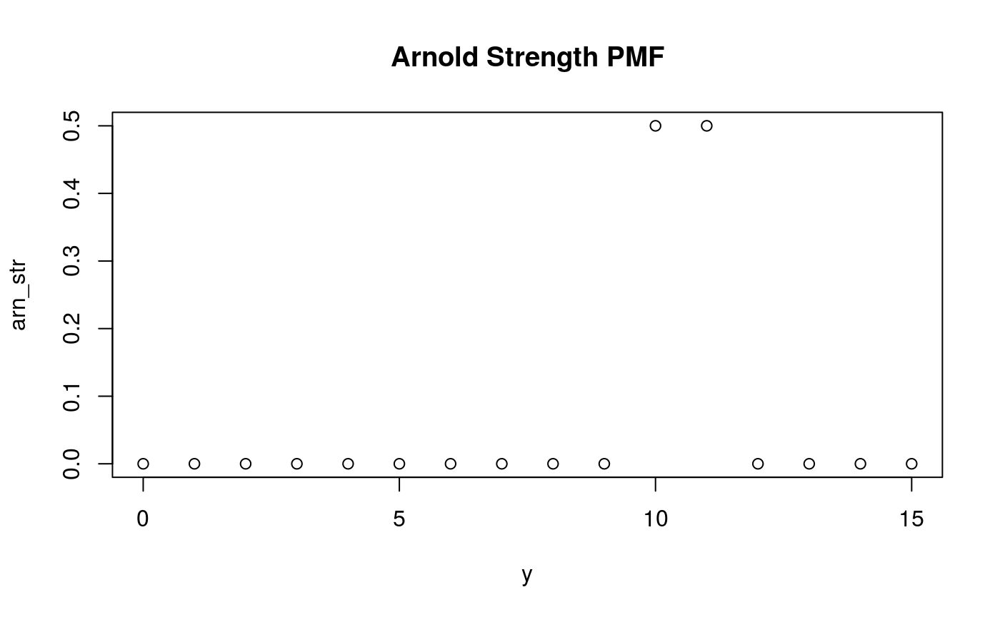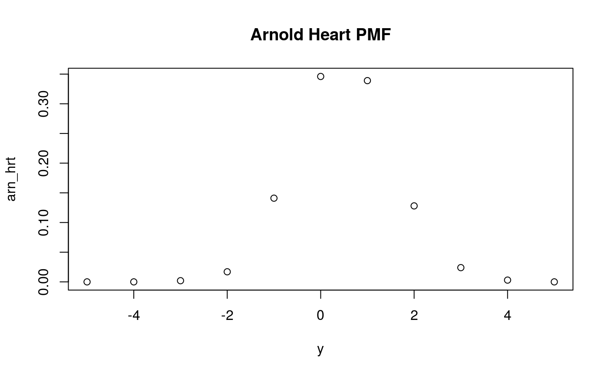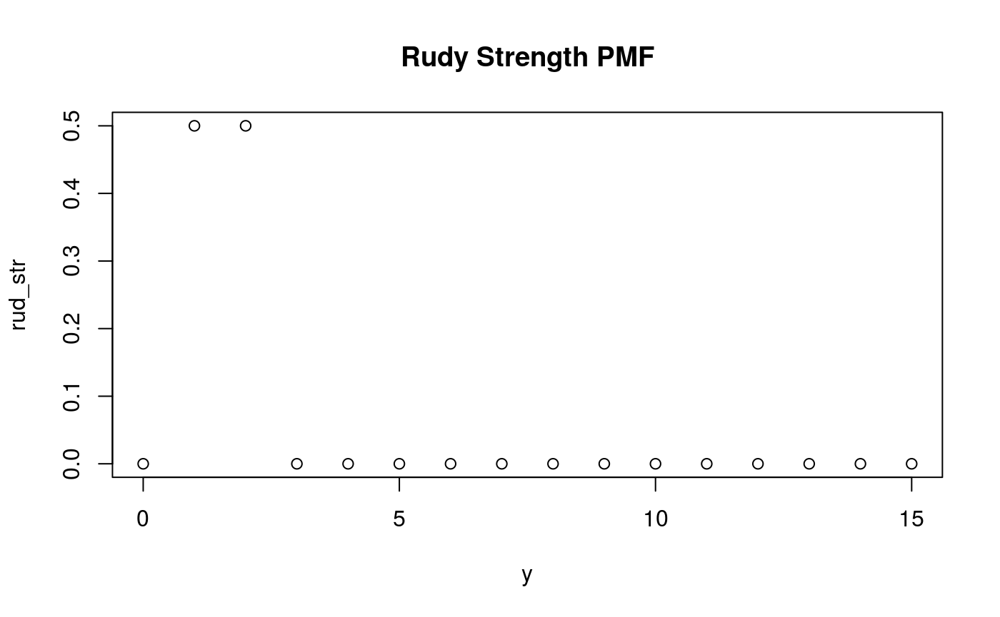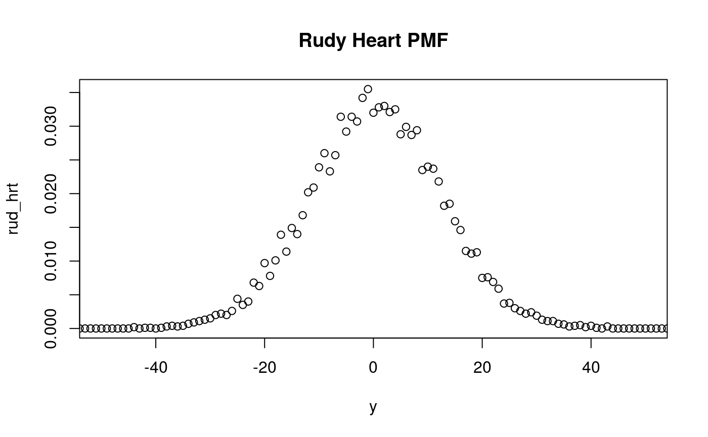
fit_pmf() derives the PMF of the variable by discretizing the CDF into segments along the range of the index. In this case the index was a sequence of integers from -59 to 60.
For an index value of x, fit_pmf() calculates the cumulative probability the variable vals is equal to or greater than x and not greater than x+1. If you want more detail about the distribution along narrow range increments, increase the number of increments in the index within the desired range:
y2 <- seq(-59,60,.01)
arn_hrt2 <- fit_pmf(sort(arn_hrt_obs),y2)
plot(y2,arn_hrt2, main='Arnold Heart PMF', xlim=c(-5,5))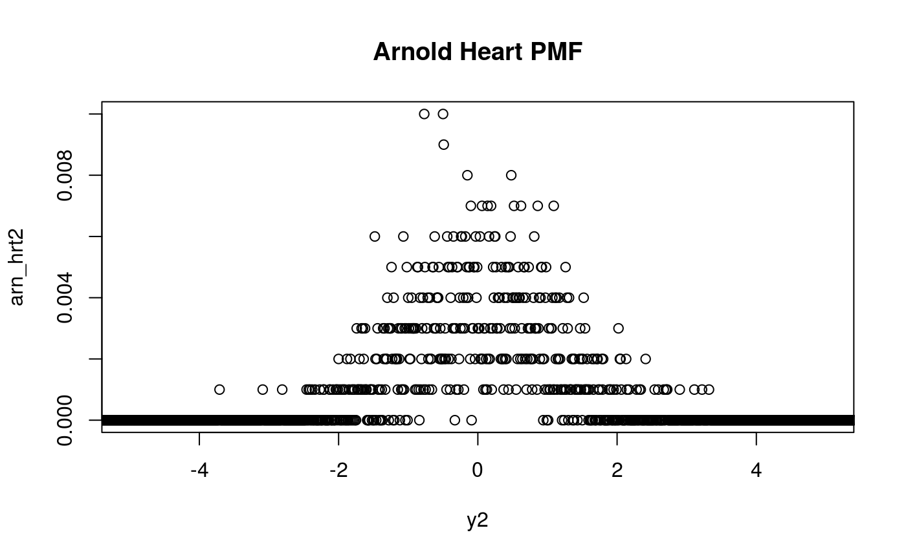
convo_add()
If you have two distributions, x and y, then let w be the sum of the two:
w = x + ymuddier uses the convo_add() function to derive the PMF of w given the PMFs of x and y, along the range of index.
Now imagine that x and y stand for strength and heart, then w represents total race effort. We can use convo_add() to derive the PMF of race effort given the variables for strength and agility for a given horse.
Rudy’s performance distribution is spread out compared to Arnold. By using different index ranges for each horse, we can provide more or less smoothing to the shape of the curve on the plot of the resulting PMF.
One cautionary note is that the index range must include the range of all possible input and outcome values of the convolution of x and y. In the case of Arnold, the index must start below -4 because the empiric distribution of Arnold’s heart attribute we generated in the code includes a value of almost -4 in the tail, even though all the values resulting from the convolution are greater than 6.
library(muddier)
n <- 10000 # number of bootstraps
ya <- seq(-5,20,.05) # index for arnold
yr <- seq(-59,60,1) # index for rudy
arn_str_obs <- 10:11
arn_hrt_obs <- rnorm(n, 0, 1)
rud_str_obs <- 1:2
rud_hrt_obs <- rnorm(n, 0, 12)
arn_str <- fit_pmf(sort(arn_str_obs), ya) # arnold strength pmf
arn_hrt <- fit_pmf(sort(arn_hrt_obs), ya) # arnold heart pmf
rud_str <- fit_pmf(sort(rud_str_obs), yr) # rudy strength pmf
rud_hrt <- fit_pmf(sort(rud_hrt_obs), yr) # rudy heart pmf
arn_eff <- convo_add(arn_str,arn_hrt, ya) # arnold effort derived pmf
rud_eff <- convo_add(rud_str,rud_hrt, yr) # rudy effort derived pmf
plot(ya,arn_eff, main='Arnold Race Effort PMF', xlim = c(5,15))
plot(yr,rud_eff, main='Rudy Race Effort PMF')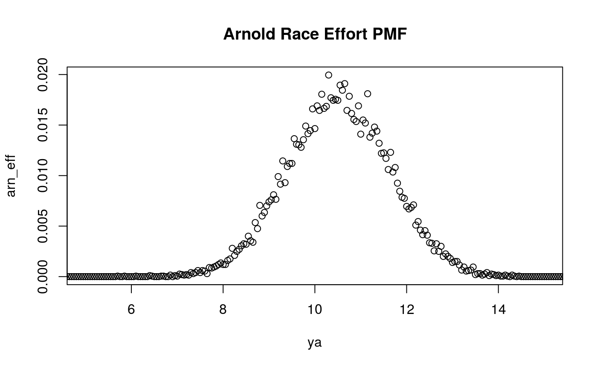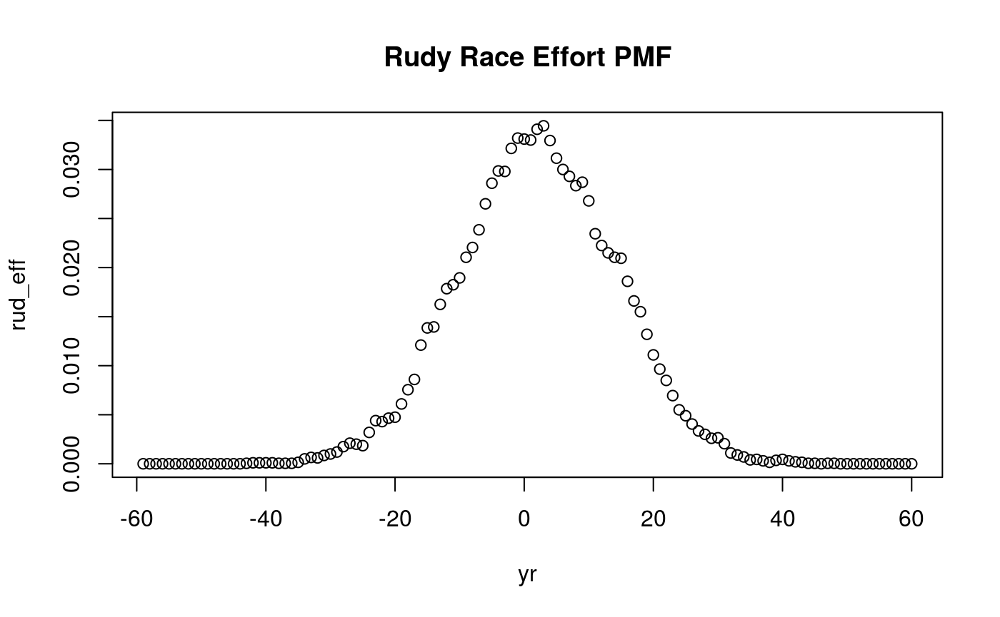
We can examine the mean performance effort of a horse using the weighted.mean function from the stats package.
print(paste0("Arnold's mean race effort is ", weighted.mean(ya, arn_eff)))
#> [1] "Arnold's mean race effort is 10.513085"
print(paste0("Rudy's mean race effort is ", weighted.mean(yr, rud_eff)))
#> [1] "Rudy's mean race effort is 2.0826"As expected, Arnold’s mean race effort is approximately equal to his mean strength of 10.5, as well as Rudy at 1.5. Rudy’s sample mean has a greater variance from the true mean because of the broader spread of the distribution compared to Arnold.
Let’s take a look at a few other horses by visiting an examle stable where several steeds have an established race record.
The first horse, Lucky, has a strength of 5-6, which is average, and an unusual distribution for the heart attribute, taking the shape of an exponential decay function of the form:
\[ y = (n - x)^k \] where n is max value of x, and k = 2. For this vignette, muddier includes a convenience wrapper utility for drawing samples from this distribution called draw_exp_decay(n, k).
The next two horses are called Abbott and Costello. Abbott’s strength is smaller at 4-5, and Costello’s strength is larger at 7-8. Abbott and Costello have normally distributed heart attributes, but Abbott has a mean heart value of 0 but his emotions are also prone to wild swings, with a sd of 7. Costello is more even-keeled and optimistic than Abbott, with a mean heart value of 1 and a sd of 3.
ys <- seq(-400,400,.1)
luck_str_obs <- 5:6
abb_str_obs <- 3:4
cost_str_obs <- 7:8
lucky_str <- fit_pmf(luck_str_obs, ys) # lucky strength pmf
abbott_str <- fit_pmf(abb_str_obs, ys) # abbott strength pmf
costello_str <- fit_pmf(cost_str_obs, ys) # costello strength pmf
luck_hrt_obs <- draw_exp_decay(25, 2)
abb_hrt_obs <- rnorm(n, 0, 7)
cost_hrt_obs <- rnorm(n, 1, 3)
lucky_hrt <- fit_pmf(sort(luck_hrt_obs), ys) # lucky heart pmf
abbott_hrt <- fit_pmf(sort(abb_hrt_obs), ys) # abbott heart pmf
costello_hrt <- fit_pmf(sort(cost_hrt_obs), ys) # costello heart pmf
# plot race attributes
# strength attribute
plot(ys[abbott_str > 0],abbott_str[abbott_str > 0], xlim = c(-15,10), col = 'red',
main = 'PMF of Strength Values', xlab = 'Strength Value',
ylab = 'Pr of value X')
points(ys[costello_str > 0], costello_str[costello_str > 0],
col='steelblue')
points(ys[lucky_str > 0], lucky_str[lucky_str > 0],
col='forestgreen')
legend('topleft', legend = c('Abbott', 'Costello', 'Lucky'),
fill = c('red', 'steelblue', 'forestgreen'))
# heart attribute
plot(ys[abbott_hrt > 0],abbott_hrt[abbott_hrt > 0], col = 'red', xlim = c(-10,50),
ylim = c(0,.15), xlab = 'Heart Value', ylab = 'Pr of value X',
main = 'PMF of Heart Values')
points(ys[costello_hrt > 0], costello_hrt[costello_hrt > 0],
col = 'steelblue')
points(ys[lucky_hrt > 0], lucky_hrt[lucky_hrt > 0],
col = 'forestgreen')
legend('topright', legend = c('Abbott', 'Costello', 'Lucky'),
fill = c('red', 'steelblue', 'forestgreen'))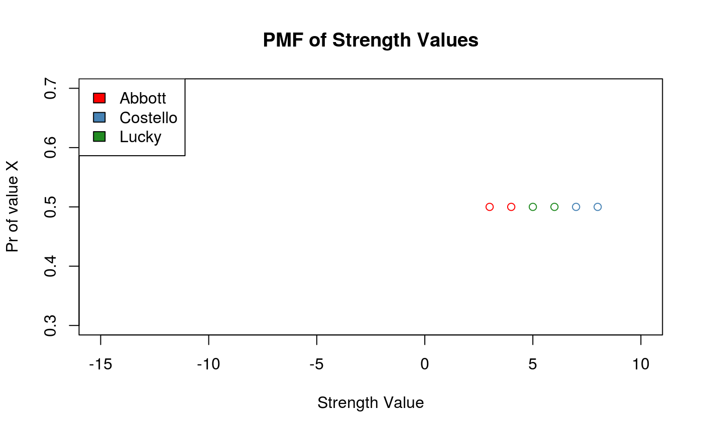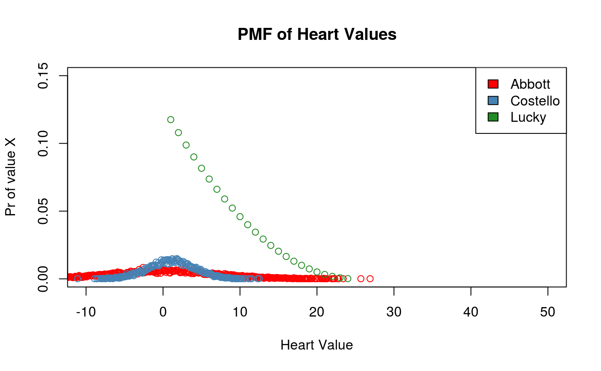
Let us say the imaginary owner of the example stable has bought Arnold and Ruby from the previous example, so the total number of horses in the stable is 5. We can examine the change in mean race power of the stable as follows:
# fit arnold and rudy obs to common index ys
arn_str <- fit_pmf(sort(arn_str_obs), ys) # arnold strength pmf
arn_hrt <- fit_pmf(sort(arn_hrt_obs), ys) # arnold heart pmf
rud_str <- fit_pmf(sort(rud_str_obs), ys) # rudy strength pmf
rud_hrt <- fit_pmf(sort(rud_hrt_obs), ys) # rudy heart pmf
# derived pmfs
abb_eff <- convo_add(abbott_str, abbott_hrt, ys) # abbott effort pmf
cos_eff <- convo_add(costello_str, costello_hrt, ys) # costello effort pmf
luck_eff <- convo_add(lucky_str, lucky_hrt, ys) # lucky effort pmf
arn_eff <- convo_add(arn_str,arn_hrt,ys) # arnold effort derived pmf
rud_eff <- convo_add(rud_str,rud_hrt,ys) # rudy effort derived pmf
prev_eff <- weighted.mean(ys, abb_eff + cos_eff + luck_eff)
cur_eff <- weighted.mean(ys, abb_eff + cos_eff + luck_eff + arn_eff + rud_eff)
print(paste0('Previous stable mean race effort was ', round(prev_eff, 2)))
#> [1] "Previous stable mean race effort was 8.12"
print(paste0('Current stable mean race effort is ', round(cur_eff, 2)))
#> [1] "Current stable mean race effort is 7.31"The bookies at the local track keep an official tally of the participants of every race, the effort put forth by each horse, and the winning horse for each event. We can create a similar race record for the five horses at our stable.
Let us run 10,000 imaginary races between the five horses in the stable and observe the resulting race record. First I collect the empiric attribute observations for each horse into a list, collect each of these horse attribute lists into a stable list. Then I define the function run_horse to take a random sample from the list of empiric strength and heart observations for a given horse. The function run_race is a list wrapper that runs the function run_horse for each horse in the stable list. The result is a record of race effort for each horse.
lucky <- list(luck_str_obs, luck_hrt_obs)
abbott <- list(abb_str_obs, abb_hrt_obs)
costello <- list(cost_str_obs, cost_hrt_obs)
arnold <- list(arn_str_obs, arn_hrt_obs)
rudy <- list(rud_str_obs, rud_hrt_obs)
stable <- list(lucky, abbott, costello, arnold, rudy)
run_horse <- function(str, hrt) {
sample(str, 1) + sample(hrt, 1)
}
run_race <- function(stable) {
unlist(lapply(stable, function(a) run_horse(a[[1]], a[[2]])))
}
record <- array(0, c(n, length(stable)))
for (i in seq_len(n)) {
record[i,] <- run_race(stable)
}For the convenience of the bookies, we need to translate the raw race effort values into simple wins and losses, so they can lay odds. The function score_winner takes a vector of race effort values and returns a vector of equal length with value 1 at the index of max race effort, and zero otherwise. Note this method permits ties, which we can ignore for this vignette.
score_winner <- function(race) {
score <- array(0,length(race))
winner <- max(race)
for (i in seq_along(race)) {
if (race[i] == winner) score[i] <- 1
}
score
}
wins <- array(0, dim(record))
for (i in seq_len(n)) {
wins[i, ] <- score_winner(record[i, ])
}
win_rec <- apply(wins, 2, sum)
names(win_rec) <- c('Lucky', 'Abbott', 'Costello', 'Arnold', 'Rudy')
print(win_rec)
#> Lucky Abbott Costello Arnold Rudy
#> 4169 842 1083 2271 1635Converting the raw race effort a horse puts into a race into an official race score requires an additional step. For horses like Abbott and Rudy, it is possible to have net negative race effort, when a negative heart value outweighs their low strength. However, during an actual race the horse cannot do worse than zero, even if they are having a bad day on in the inside.
The following code snippet copies the race effort record into a variable called score, then changes any values in score below zero to zero.
score <- record
names(score) <- c('Lucky', 'Abbott', 'Costello', 'Arnold', 'Rudy')
for (i in 1:ncol(score)) {
score[score[ , i] < 0, i] <- 0
}In this example, 20% of Abbott’s scores fell below zero and were truncated, whereas half of Rudy’s scores fell below zero.
In the example above, truncation occurs at the time of sampling, after drawing strength and heart values from the distribution of empiric observations for the given horse.
In the following example, we use the derived race effort PMF for each horse, then truncate and renormalize the PMFs by defining two utility functions, normalize and trunc_0. The function trunc_norm is a wrapper for normalize and trunc_0, to reduce the operation to a single function call, in order to pass the call to lapply.
normalize <- function(probs) {
norm <- array(0, length(probs))
for (i in seq_along(probs)) {
norm[i] <- probs[i] / sum(probs)
}
norm
}
trunc_0 <- function(pmf, index) {
trunc <- pmf
for (i in seq_along(index)) {
if (index[i] < 0) trunc[i] <- 0
}
trunc
}
trunc_norm <- function(pmf, index = ys) {
normalize(trunc_0(pmf, ys))
}
stable_eff <- list(lucky = luck_eff,
abbott = abb_eff,
costello = cos_eff,
arnold = arn_eff,
rudy = rud_eff)
stable_trunc <- lapply(stable_eff, function(a) trunc_norm(a))Previously, to create a race record we could sample from the empiric pool of observations for each horse. For the PMF we can create a sythetic event space where the observer sampling at random has a chance of selecting a given value from the event space equivalent to the relative probability of that value occurring in the PMF.
The function draw_event_space uses the scale parameter to create a sample space of sufficient size to capture the variability in the PMF.
draw_event_space <- function(pmf, index, scale=10000) {
probs <- pmf[pmf>0]
vals <- index[pmf>0]
unlist(mapply(function(a,b,c) rep(a,b*c),
a = vals, b = probs, MoreArgs = list(c=scale)))
}
stable_obs <- lapply(stable_trunc, function(a, b) draw_event_space(a, b), b = ys)Bootstrapping race results using synthetic observations from derived race effort PMFs than directly from observed heart and strength values, since we can sample from a single pool rather than two. We can also reuse the score_winner function to quickly produce win results using the truncated and normalized PMFs.
trunc_boot <- matrix(unlist(
lapply(stable_obs, function(a) sample(a, n, rep=T))), ncol=5)
trunc_wins <- array(0, dim(trunc_boot))
for (i in seq_len(n)) {
trunc_wins[i, ] <- score_winner(trunc_boot[i, ])
}
trunc_win_rec <- apply(trunc_wins, 2, sum)
names(trunc_win_rec) <- c('Lucky', 'Abbott', 'Costello', 'Arnold', 'Rudy')
print(trunc_win_rec)
#> Lucky Abbott Costello Arnold Rudy
#> 3724 1059 880 1596 2846Note that we have entered a topsy-turvy world where Rudy beats Arnold and Abbott is faster than Costello.
Races where the horse puts forth negative effort are races where the horse loses. By truncating and renormalizing the race effort PMF at zero, we have subset from all races those where the horse had a good enough day to put forth positive effort. By racing horses using synthetic observations drawn from these truncated PMFs, we have asked how race results would be if each horse in the stable only had good days. Note the comparison between untruncated and truncated CDFs below:
cdfs <- apply(score, 2, staTools::cdf)
plot(cdfs[[5]], type = 'l', lwd = 2, col = 'lightseagreen', ylim = c(0,1),
main = 'CDF of Race Score', xlab = 'Race Score',
sub = 'Untruncated',
ylab = 'Prop. of Sample at or below X')
lines(cdfs[[1]], lwd = 2, col = 'forestgreen')
lines(cdfs[[2]], lwd = 2, col = 'red')
lines(cdfs[[3]], lwd = 2, col = 'slateblue')
lines(cdfs[[4]], lwd = 2, col = 'goldenrod')
#legend('bottomright', legend=c('Lucky', 'Abbott', 'Costello', 'Arnold', 'Rudy'),
# fill=c('forestgreen','red','slateblue','goldenrod','lightseagreen'))
trunc_cdfs <- lapply(stable_obs, staTools::cdf)
plot(trunc_cdfs[[5]], type = 'l', lwd = 2, col = 'lightseagreen', ylim = c(0,1),
main = 'CDF of Race Score', xlab = 'Race Score',
sub = 'Truncated',
ylab = 'Prop. of Sample at or below X')
lines(trunc_cdfs[[1]], lwd = 2, col = 'forestgreen')
lines(trunc_cdfs[[2]], lwd = 2, col = 'red')
lines(trunc_cdfs[[3]], lwd = 2, col = 'slateblue')
lines(trunc_cdfs[[4]], lwd = 2, col = 'goldenrod')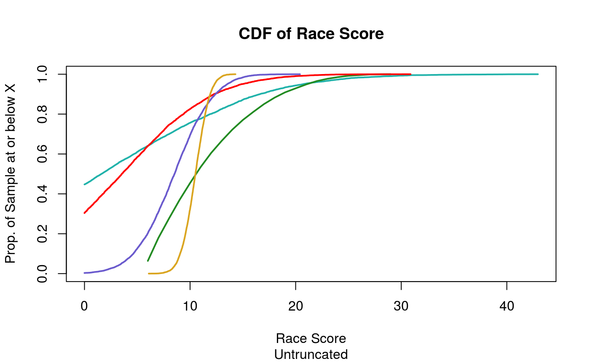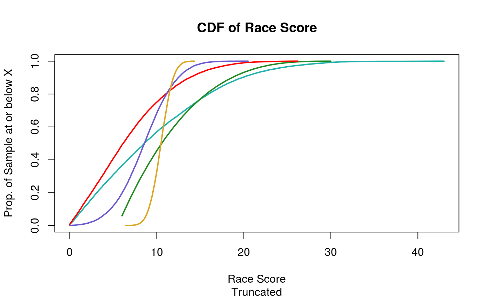
Another way to think of it is that race effort can be negative but the race score can only go down to zero. If a race effort PMF has a distribution including negative and positive values, it will have a lower mean than the official score PMF for the same horse, because all negative results from the race effort PMF are truncated at zero in the official score.
The code snippet below prints the mean race score truncated at zero at the time of the race, vs. truncating the race effort PMF directly before bootstrapping race results.
trunc_score <- apply(score, 2, mean)
trunc_pmf <- apply(trunc_boot, 2, mean)
horses <- c('Lucky', 'Abbott', 'Costello', 'Arnold', 'Rudy')
names(trunc_score) <- horses
names(trunc_pmf) <- horses
print(trunc_score)
#> Lucky Abbott Costello Arnold Rudy
#> 12.113400 4.879873 8.494256 10.498949 5.580452
print(trunc_pmf)
#> Lucky Abbott Costello Arnold Rudy
#> 12.18240 6.94518 8.59346 10.53497 9.84299